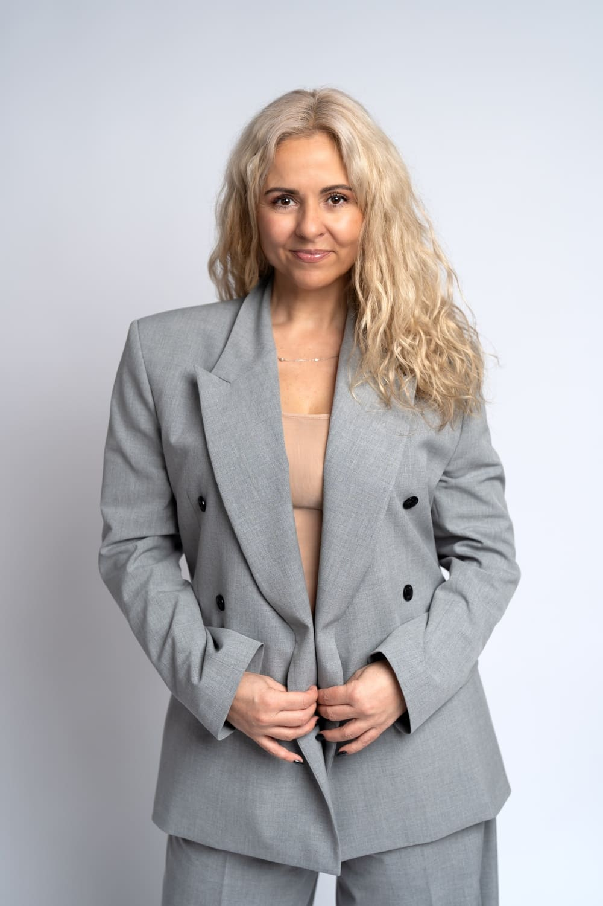
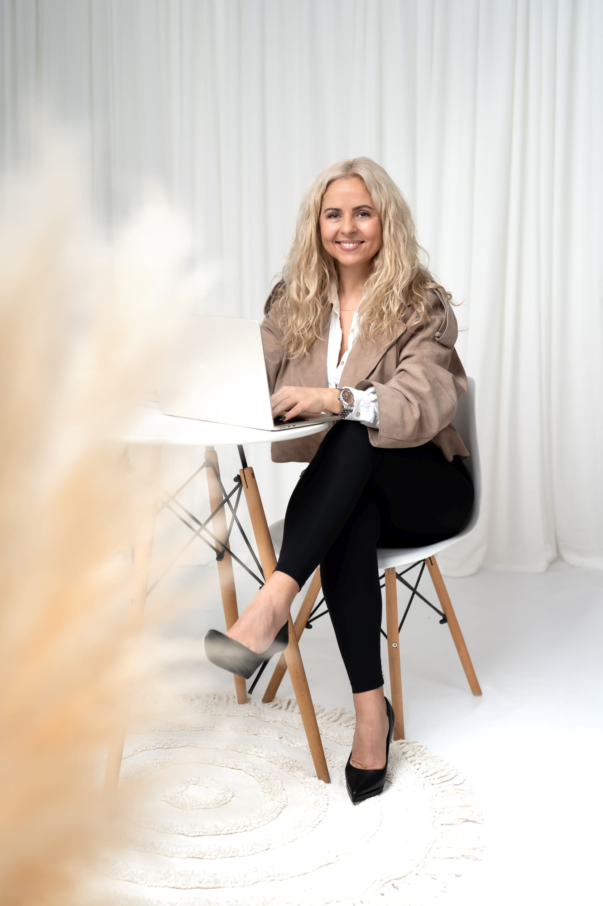

Když se potřebujete zorientovat a jednat v souladu se sebou. Podle svých hodnot a potřeb.
„Zpomalením a hlubším porozuměním toho, co prožíváte, můžete postupně opustit vnitřní bolest a žít plnohodnotnější život.“

Přináším klid, jasnost a podporu v náročných situacích.
Přináším klid, jasnost a podporu v náročných situacích.
Právě teď můžete začít vědomě tvořit život, který chcete opravdu žít.
Co je pro mě v práci s Vámi klíčové:
Jdu pod povrch
Díváme se na to, co skutečně stojí za Vašimi reakcemi a rozhodnutími.
Vnímám Vás v souvislostech
Reflektuji to, co zaznívá mezi slovy - a nechávám Vás rozhodnout, jestli je to Vaše.
Propojuji odbornost, praxi a osobní zkušenosti
Opírám se o vzdělání, firemní praxi, práci s lidmi a vlastní prožité zkušenosti.
Podporuji odvahu začít u sebe
Společně hledáme to, co je ve Vás pravdivé, neboť skutečná změna začíná upřímností k sobě.
Někdy stačí mít prostor, kde se věci mohou vyjasnit.

Jak pracuji
Ve své práci propojuji zkušenosti z firemního prostředí s profesionálním koučovacím rámcem a hlubokým vnímáním lidí. Vycházím z poznání, že každý člověk má v sobě schopnost se dobře rozhodovat – jen pod tlakem může ztratit kontakt se sebou.
Vytvářím prostor, kde je možné se zastavit a soustředit pozornost zpět k sobě a vlastnímu vedení.
Kladu trefné a podstatné otázky.
Naslouchám nejen slovům, ale i souvislostem.
Jsem přítomná, bez hodnocení, s upřímným zájmem porozumět.
Spolupráce probíhá jen tam, kam mě pustíte.
Vycházím z koučovacího přístupu, který v případě potřeby a se souhlasem klienta doplňuji o mentoring.
Úvodní setkání zdarma
Slouží k tomu, abychom zjistili, zda je pro Vás spolupráce se mnou užitečná. Probíhá on-line nebo osobně a k ničemu Vás nezavazuje.
Nabídka pro firmy
„Ve firmách pracují lidé. A lidé si do práce nosí život.“
Strategická práce s lidmi jako součást dlouhodobě udržitelného fungování
Well-being koučink
Nabízím firmám individuální koučovací setkání a zaměstnancům bezpečný prostor, kde se mohou zastavit a otevřeně mluvit o libovolně zvoleném tématu, které ovlivňuje jejich pracovní pohodu, soustředění nebo psychickou rovnováhu.
V případě zájmu se můžeme potkat na úvodní schůzce, kde společně probereme možnosti spolupráce.
Více o nabídce pro firmy
Reference
Jak probíhá spolupráce
Vyplníte formulář a domluvíme se na úvodním nezávazném setkání.
Spojíme se online přes Microsoft Teams nebo přes WhatsApp, případně osobně.
Během 30 minut si popovídáme a zjistíme, zda se domluvíme na další spolupráci.
O mně
Jmenuji se Kateřina.
Věřím tomu, že každý člověk má svůj jedinečný příběh, a že společné sdílení je hluboce léčivé.
15 let jsem působila v mezinárodní společnosti. Vím, jaké to je být pod tlakem, rychle se rozhodovat a nést odpovědnost. Znám situace, kdy se ve vztazích objevují hry moci, tlak a manipulace. Těmito zkušenostmi jsem si prošla z obou stran a zásadně mě proměnily.
Číst víceOtázky a odpovědi
Možná se Vám v životě něco opakuje. Možná stojíte před rozhodnutím a nevíte, jak dál. Pod tlakem často nevidíme řešení, která jsou jinak dostupná. Koučink nabízí bezpečný prostor zastavit se, získat odstup a najít cestu, která dává smysl právě Vám.
Jsem tu tak dlouho, jak budete potřebovat. Nicméně mým záměrem není vytvářet závislostní vztah, ale podpořit Vaši samostatnost a schopnost čelit životním výzvám v klidu. Tak můžete zůstat svobodní.
Změna je přirozenou součástí života. Někdy stačí změnit úhel pohledu. Koučink Vám pomůže najít způsob, jak nejistoty ustát a využít je jako příležitost k růstu.
Ano, setkání jsou plně důvěrná. Pokud si dělám poznámky, jsou anonymní a slouží pouze pro mou orientaci v procesu. Výjimkou jsou situace bezprostředního ohrožení života, zdraví nebo plánovaného závažného trestného činu, kdy mi zákon ukládá oznamovací povinnost.
Koučink není náhradou psychoterapie ani psychiatrické péče. Pokud se nacházíte v akutní psychické krizi nebo řešíte závažné duševní onemocnění, je důležité obrátit se na zdravotnického odborníka.
Součástí spolupráce je úvodní nezávazné setkání. Uvidíme, zda si lidsky i pracovně sedneme. Pokud ne, ráda doporučím kolegy.
Až 95 % našich rozhodnutí a reakcí probíhá nevědomě. Většinou jednáme automaticky a řídí nás staré vzorce a přesvědčení z minulosti. Právě proto má smysl zpomalit, navnímat se a zjistit, jestli jednáme v souladu s tím, co je pro nás důležité.